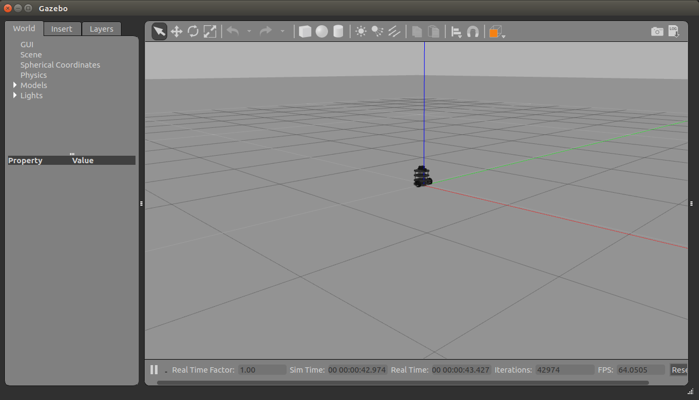
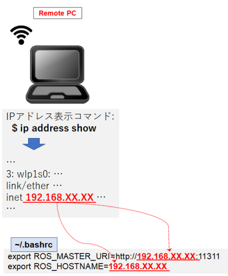
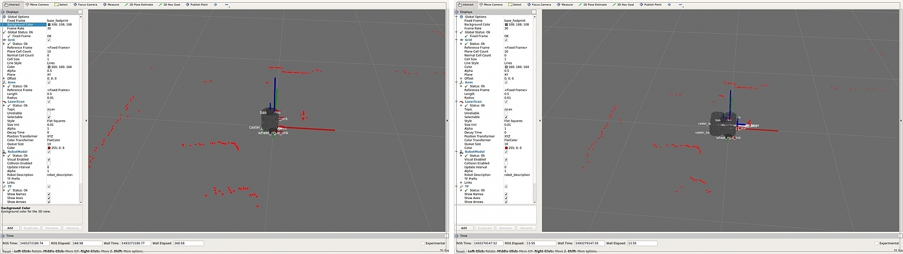
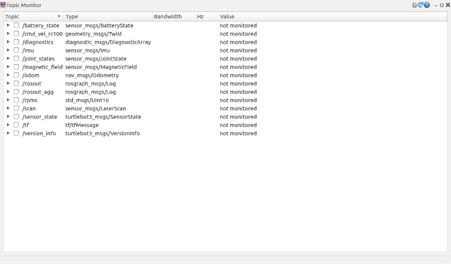
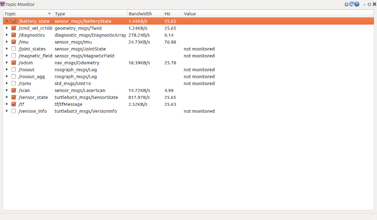
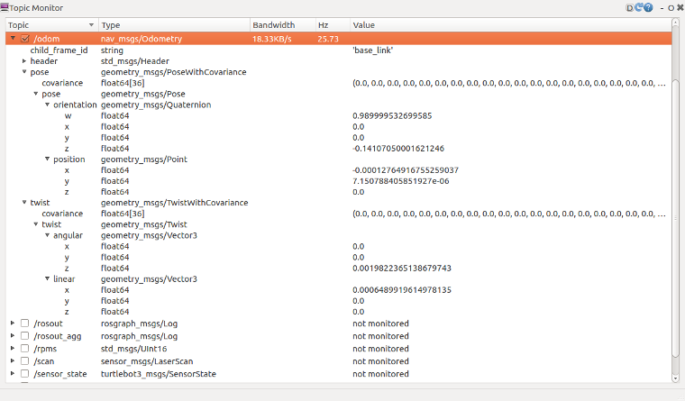
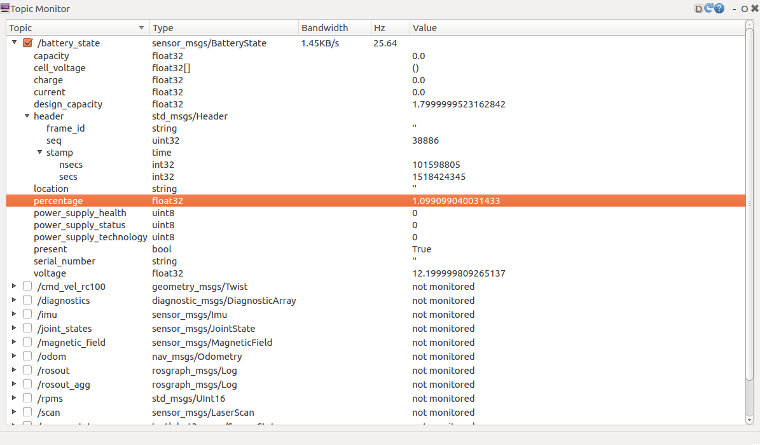
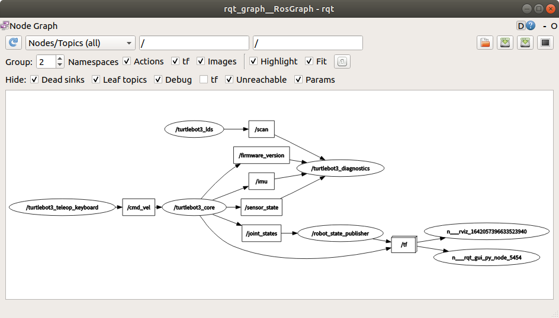

第142回 ロボット工学セミナー
ロボットの作り方
～移動ロボットの制御とROSによる動作計画実習～
基本的なROS上で移動ロボットの操作方法を学習します。
TurtleBot3のモデル名を指定する必要があります。
【リモートPCで実施】
$ echo "export TURTLEBOT3_MODEL=burger" >> ~/.bashrc
$ source ~/.bashrc
シミュレーションでTurtleBot3を操作
シミュレーション環境をインストールします。
【リモートPCで実施】
$ cd ~/catkin_ws/src/
$ git clone -b melodic-devel https://github.com/ROBOTIS-GIT/turtlebot3_simulations.git
$ cd ..
$ catkin_make
シミュレーションを起動します。
【リモートPCで実施】
$ roslaunch turtlebot3_gazebo turtlebot3_empty_world.launch
PCの性能によってシミュレータを起動するのに多少時間がかかります。下記のようなウィンドウが表示されるまで待ちましょう。

キーボードでロボットを操作
TurtleBot3は、さまざまな機器での遠隔操作が可能です。PS3、 Xbox360、 ROBOTIS RC100などの無線機器で動作確認をしています。
簡易的な遠隔操作のテストを行うためにturtlebot3_teleop_keyノードを起動します。
新しいターミナルウィンドウを開き、以下のコマンドを入力します。
【リモートPCで実施】
$ roslaunch turtlebot3_teleop turtlebot3_teleop_key.launch
ノードの起動に成功すると、ターミナルウィンドウに以下のようなコマンドが表示されます。
Control Your Turtlebot3!
---------------------------
Moving around:
w
a s d
x
w/x : increase/decrease linear velocity
a/d : increase/decrease angular velocity
space key, s : force stop
CTRL-C to quit
シミュレータの画面を見ながらそれぞれのキーを押してロボットがどう動くか確認しましょう。
シミュレータとturtlebot3_teleop_keyを起動したターミナルでCtrl+cを押すとプログラムが終了します。
実際のTurtleBot3を操作
下記の実習を行うために、まずROS_MASTER_URIとROS_HOSTNAMEのlocalhostをリモートPCのIPアドレスに変更します。(下図参照)

さきほど修正した設定を反映するため、以下を実行します。 (~/.bashrcの修正により、今後、新規にターミナルを開いた時は自動で設定が反映されます)
【リモートPCで実施】
$ source ~/.bashrc
TurtleBotをリモートPCで表示
警告：
- TurtleBot3側のPC上で roscore を 実行しないでください。
- 各デバイスのIPアドレスが正しく設定されているかどうかを確認してください。
- バッテリー電圧が11V以下になるとブザーアラームが鳴り続け、アクチュエータが作動しなくなります。ブザーアラームが鳴った場合は、バッテリーを充電する必要があります。
roscoreの実行
注釈：ターミナルアプリは、画面左上の”Activities”から検索することが出来ます。ターミナルのショートカットキーは、Ctrl+Alt+tです。
リモートPCで roscoreを実行します。
【リモートPCで実施】
$ roscore
TurtleBot3を起動
TurtleBot3のアプリケーションを起動するための基本的なパッケージを起動します。
新しいターミナルウィンドウを開き、TurtleBot3の制御コンピュータ(SBC)にログインします。
【リモートPCで実施】
$ ssh ubuntu@192.168.YY.YY (The IP 192.168.YY.YY is your Raspberry Pi’s IP or hostname)
パスワードはturtlebotです。(変更している場合は適宜読み替えてください)
下記のような表示があれば接続は成功です。
【リモートPCで実施】
$ ssh ubuntu@192.168.YY.YY
ubuntu@192.168.YY.YY’s password: ... Last login: [曜日] [月] [日] XX:XX:XX 2022 from 192.168.XX.XX
$
SBCへのログイン後、以下を実行します。
【リモートPCからログインしたSBCで実施】
$ roslaunch turtlebot3_bringup turtlebot3_robot.launch
以下のようなメッセージが表示されます。 (IPアドレスなどは環境によって異なる可能性があります)
もし、メッセージが全く表示されない場合は、リモートPCおよび、SBCのROS_MASTER_URI、ROS_HOSTNAMEのIPアドレス設定が正しいか確認ください。
SUMMARY ======== PARAMETERS * /rosdistro: melodic * /rosversion: 1.14.10 * /turtlebot3_core/baud: 115200 * /turtlebot3_core/port: /dev/ttyACM0 * /turtlebot3_core/tf_prefix: * /turtlebot3_lds/frame_id: base_scan * /turtlebot3_lds/port: /dev/ttyUSB0 NODES / turtlebot3_core (rosserial_python/serial_node.py) turtlebot3_diagnostics (turtlebot3_bringup/turtlebot3_diagnostics) turtlebot3_lds (hls_lfcd_lds_driver/hlds_laser_publisher) ROS_MASTER_URI=http://192.168.1.2:11311 process[turtlebot3_core-1]: started with pid [14198] process[turtlebot3_lds-2]: started with pid [14199] process[turtlebot3_diagnostics-3]: started with pid [14200] [INFO] [1531306690.947198]: ROS Serial Python Node [INFO] [1531306691.000143]: Connecting to /dev/ttyACM0 at 115200 baud [INFO] [1531306693.522019]: Note: publish buffer size is 1024 bytes [INFO] [1531306693.525615]: Setup publisher on sensor_state [turtlebot3_msgs/SensorState] [INFO] [1531306693.544159]: Setup publisher on version_info [turtlebot3_msgs/VersionInfo] [INFO] [1531306693.620722]: Setup publisher on imu [sensor_msgs/Imu] [INFO] [1531306693.642319]: Setup publisher on cmd_vel_rc100 [geometry_msgs/Twist] [INFO] [1531306693.687786]: Setup publisher on odom [nav_msgs/Odometry] [INFO] [1531306693.706260]: Setup publisher on joint_states [sensor_msgs/JointState] [INFO] [1531306693.722754]: Setup publisher on battery_state [sensor_msgs/BatteryState] [INFO] [1531306693.759059]: Setup publisher on magnetic_field [sensor_msgs/MagneticField] [INFO] [1531306695.979057]: Setup publisher on /tf [tf/tfMessage] [INFO] [1531306696.007135]: Note: subscribe buffer size is 1024 bytes [INFO] [1531306696.009083]: Setup subscriber on cmd_vel [geometry_msgs/Twist] [INFO] [1531306696.040047]: Setup subscriber on sound [turtlebot3_msgs/Sound] [INFO] [1531306696.069571]: Setup subscriber on motor_power [std_msgs/Bool] [INFO] [1531306696.096364]: Setup subscriber on reset [std_msgs/Empty] [INFO] [1531306696.390979]: Setup TF on Odometry [odom] [INFO] [1531306696.394314]: Setup TF on IMU [imu_link] [INFO] [1531306696.397498]: Setup TF on MagneticField [mag_link] [INFO] [1531306696.400537]: Setup TF on JointState [base_link] [INFO] [1531306696.407813]: -------------------------- [INFO] [1531306696.411412]: Connected to OpenCR board! [INFO] [1531306696.415140]: This core(v1.2.1) is compatible with TB3 Burger [INFO] [1531306696.418398]: -------------------------- [INFO] [1531306696.421749]: Start Calibration of Gyro [INFO] [1531306698.953226]: Calibration End
ヒント：LiDARセンサ、Raspberry Pi Camera、Intel® RealSense™ R200、もしくはコアを別々に起動したい場合は、以下のコマンドを使用してください。
- $ roslaunch turtlebot3_bringup turtlebot3_lidar.launch
- $ roslaunch turtlebot3_bringup turtlebot3_rpicamera.launch
- $ roslaunch turtlebot3_bringup turtlebot3_realsense.launch
- $ roslaunch turtlebot3_bringup turtlebot3_core.launch
注釈：ターミナルウィンドウにlost sync with deviceというエラーメッセージが表示された場合は、TurtleBot3 のセンサデバイスが正しく接続されていない可能性があります。
Rviz上でTurtleBot3をロードする
リモートPCで robot state publisherとRVizを実行します。
新しいターミナルウィンドウを開き、以下のコマンドを入力します。
【リモートPCで実施】
$ roslaunch turtlebot3_bringup turtlebot3_remote.launch
新しいターミナルウィンドウを開き、以下のコマンドを入力します。
【リモートPCで実施】
$ rosrun rviz rviz -d `rospack find turtlebot3_description`/rviz/model.rviz

キーボードでロボットを操作
注釈：
- この例は、リモートPCでの動作を想定しています。
警告：この例を実行する前に、必ずBringupコマンドを実行してください。また、テーブルの上でロボットをテストする際には、ロボットが落下してしまう可能性があるため、注意してください。
シミュレーションと同様にturtlebot3_teleop_keyノードを起動します。
リモートPCで新しいターミナルウィンドウを開き、以下のコマンドを入力します。
【リモートPCで実施】
$ roslaunch turtlebot3_teleop turtlebot3_teleop_key.launch
ノードの起動に成功すると、ターミナルウィンドウに以下のようなコマンドが表示されます。
Control Your Turtlebot3!
---------------------------
Moving around:
w
a s d
x
w/x : increase/decrease linear velocity
a/d : increase/decrease angular velocity
space key, s : force stop
CTRL-C to quit
ロボットを床においてrvizの画面とロボットを確認しながらキーボードでロボットを動かしてみましょう。
動作確認が終わりましたら一旦全てのノードを終了させます。
下記のコマンドでroscore以外のノードを終了させることができます。
【リモートPCで実施】
$ rosnode kill -a
roscoreを終了させるのにroscoreを起動しているターミナルでCtrl+cを押します。
下記のような表示があればroscoreが終了したことが確認できます。
^C[rosout-1] killing on exit [master] killing on exit shutting down processing monitor ... ... shutting down processing monitor complete done
TurtleBot3のアプリケーションを起動するために開いたターミナルでexitを記入し、Enterキーを押すと接続を切断します。
【リモートPCからログインしたSBCで実施】
$ exit
$
ご参考
rosノードが実行中にTopicを可視化するツールを紹介します。デバッグなどに役立ちます。
Topicのモニタ
TurtleBot3のトピックを確認するために、ROSが提供するrqtを使用します。 rqtはすべてのトピックを表示することで、トピックのステータスを簡単に確認できるようにするツールです。
roscoreが動作していることを確認後、以下のコマンドを使用して、リモートPCからrqtを実行します。
トピックモニターウィンドウが表示されない場合は、plugin->Topics->Topic Monitorを選択します。
【リモートPCで実施】
$ rqt
(起動時にターミナルにERRORが表示されることがありますが、rqtは起動するようです)
前項のようにTurtlebot3が動作している場合、以下のような表示になります。

トピックモニターが起動しても、トピック値はモニターされません。各トピックの横にあるチェックボックスをクリックして、トピックのモニターを開始します。

より詳細なトピックメッセージを表示するには、チェックボックスの横にあるアイコン▶をクリックします。

例えば、/battery_stateは、現在のバッテリー電圧や残量など、バッテリーの状態を表示します。

このようにrqtでトピックを表示することで、デバッグなどへの活用が可能となります。
Topicとノードの関係
TurtleBot3のトピックとノードの関係を可視化するには、rqt_graphを使用します。rqt_graphは各ノードがpublish/subscribeするトピックをグラフ表示します。
roscoreが動作していることを確認後、以下のコマンドを使用してリモートPCからrqt_graphを実行します。
各ノードとトピックの関係が表示されない場合は、左上のコンボボックスから、Nodes/Topics(all)を選択します。
【リモートPCで実施】
$ rqt_graph
(起動時にターミナルにERRORが表示されることがありますが、rqt_graphは起動するようです)
以下のように、ノードは円、トピックは矩形に囲まれて表示されます。

メインページに戻る